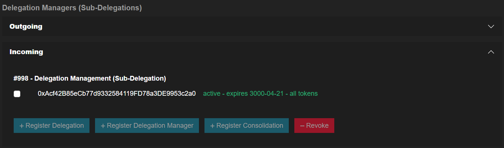
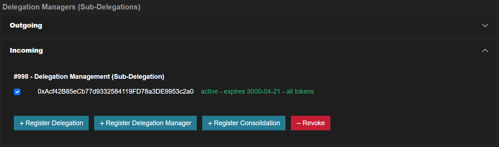
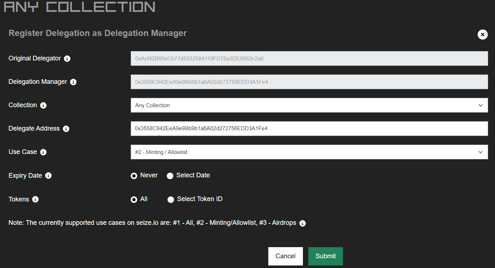
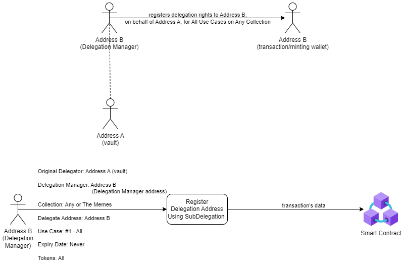

- Set Address B (transaction) as the Subdelegate of Address A.
- Go to the Delegation Center section and click the Register Delegation Manager (Sub-Delegation) button.
- Choose 'Any Collection' and enter the wallet Address B.

- Click on 'Submit' and execute the transaction.

Once completed, Address A will not need to connect to any service again, and further delegations can be made on its behalf by Address B.
-
Delegate Case 2 (minting/allowlist) on behalf of Address A (vault) to Address B (transaction).
- Go to the Delegation Center section, click the View/Manage button on 'Any Collection,' and locate the incoming Delegation Manager under the Delegation Managers (Sub-delegations) area.

- Select the Address of wallet A and click the Register Delegation button.

- Complete the Register Delegation Using Delegation Management (Sub-delegation) Rights form:
- Choose 'Any Collection' and enter wallet Address B (same as the Delegation Manager).
- Select Use Case #2 Minting / Allowlist.
- Choose an expiry date (e.g., Never) and specify if the delegation applies to all tokens owned by Address A or a specific token ID (it is recommended not to select a specific token ID).
- Click on 'Submit' and execute the transaction.

This will assign all allowlist spots for Address A to Address B, which can mint on behalf Address A. Address B can continue to manage delegations for Address A.
- Go to the Delegation Center section, click the View/Manage button on 'Any Collection,' and locate the incoming Delegation Manager under the Delegation Managers (Sub-delegations) area.
